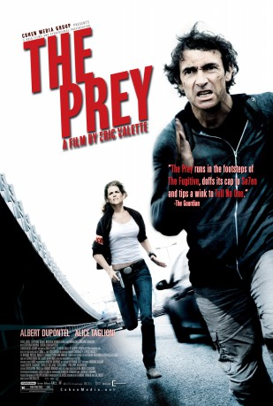

gesehen am 12.02.2016
gesehen am 12.02.2016Alternativ: The Prey (Englischer Titel) gesehen am 12.02.2016
 
 IMDB-Wertung: 6.7 / 10
IMDB-Wertung: 6.7 / 10  Metascore:
Metascore: 
Der sadistische Serienkiller Maurel versucht mit einem perfiden Trick, die Aufmerksamkeit der Ermittler auf seinen ehemaligen Mithäftling Franck zu lenken, der noch sechs Monate seiner Strafe verbüßen muss. Als Maurel auch noch Francks Familie bedroht, sieht dieser nur noch einen Ausweg: Er muss kurz vor seiner Entlassung aus dem Gefängnis fliehen und Maurel finden - koste es, was es wolle! Gejagt von der Polizei und getrieben von der Sorge um seine Familie kommt Franck dem Killer immer näher...
Jahr: 2011
Dauer: 100 Minuten
FSK: 16
Land: Frankreich Studio: Koch MediaTonspuren:
Untertitel:
Auflösung: 1080p (1920x824) Größe: 4679 MB
Genre: Action, Thriller, Krimi
Regisseur: Eric Valette
Drehbuch: Laurent Turner, Luc Bossi, Jeffrey Hylton
Soundtrack: Noko
Darsteller:
 Albert Dupontel als Franck Adrien
Albert Dupontel als Franck Adrien Alice Taglioni als Claire Linné
Alice Taglioni als Claire Linné Stéphane Debac als Jean-Louis Maurel
Stéphane Debac als Jean-Louis Maurel Sergi López als Manuel Carrega
Sergi López als Manuel Carrega Serge Hazanavicius als Lafay
Serge Hazanavicius als Lafay Zinedine Soualem als Lucciani
Zinedine Soualem als Lucciani Caterina Murino als Anna Adrien
Caterina Murino als Anna Adrien Olivier Schneider als Novick
Olivier Schneider als Novick Sebastien Vandenberghe als Le colosse
Sebastien Vandenberghe als Le colosse Alyson Leigh Rosenfeld als Mélissa
Alyson Leigh Rosenfeld als Mélissa Jean-Marie Winling als Robert Pascaud
Jean-Marie Winling als Robert PascaudDatei: X:\2011(N-Z)\On the Run (2011, FSK16, 1920x824).mkv seit 11.02.2016
Festplatte: HD 2011(G-Z)
 Es gibt insgesamt 132 Filme in der Gruppe '2011(N-Z)'
Es gibt insgesamt 132 Filme in der Gruppe '2011(N-Z)'